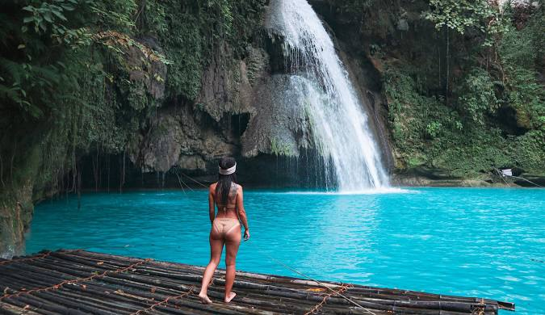
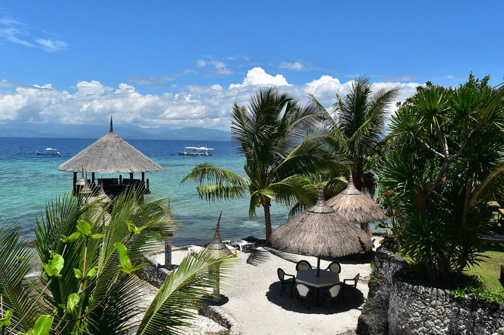
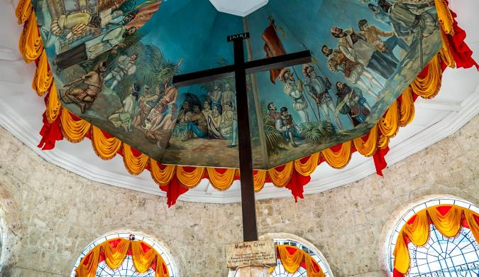
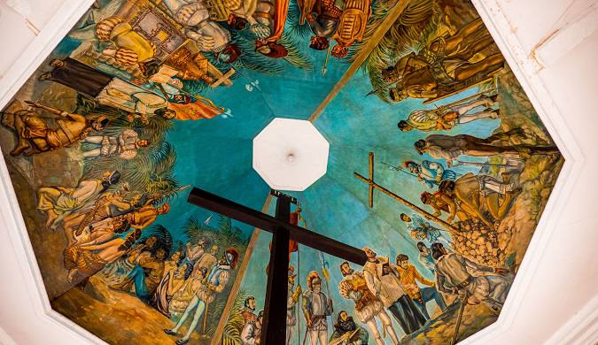
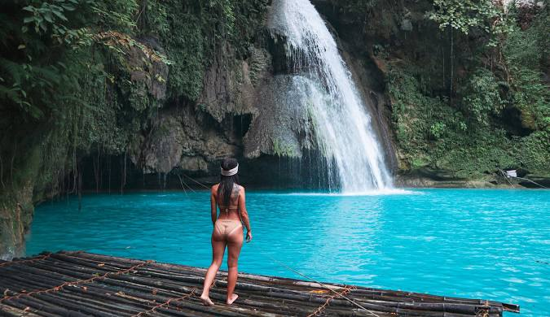
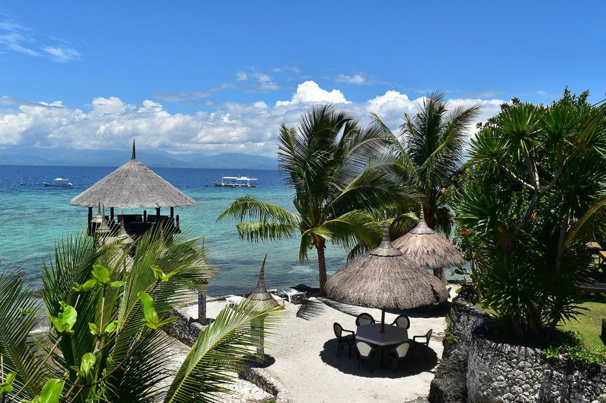
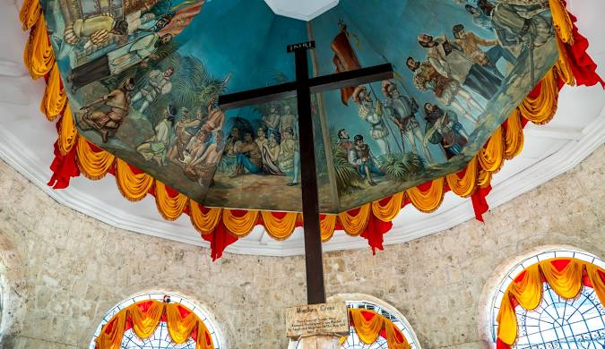
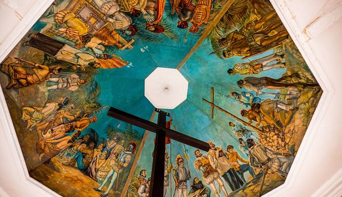

- Boracay is famous for its white sand beaches and crystal-clear waters. It is a popular destination for beach lovers and those looking to relax or enjoy various water sports.
- Boracay is a tropical island approximately located 315 km (200 miles) south of Manila and 2 km northwest end of the island of Panay in the Western Visayas in the Philippines.
- It is one of the most popular tourist destinations in the country. The island consists of the barangays of Manoc-Manoc, Balabag, and Yapak.
- (3 of the 17 barangays consisting of the Malay town), and is under the management of the Philippine Tourism Authority with ties to the Provincial Government of Aklan.
- The province of Bohol is a first-class province divided into 3 congressional districts, comprising 1 component city and 47 municipalities. It has 1,109 barangays.
- The province is a popular tourist destination with its beaches and resorts. The Chocolate Hills, numerous mounds of brown-colored limestone formations, are the most popular attraction.
- The formations can be seen by land (climbing the highest point) or by air via ultralight air tours.
- Panglao Island, located just southwest of Tagbilaran, is famous for its diving locations and is routinely listed as one of the top ten diving locations in the world.
- Numerous tourist resorts and dive centers dot the southern beaches. The Philippine Tarsier, among the world's smallest primates, is indigenous to the island.
- Cebu is rich in history and offers a mix of cultural attractions and natural beauty. It is home to the famous Kawasan Falls and beautiful beaches in Moalboal and Malapascua Island.
- Province of Cebu is a province of the Philippines located in the Central Visayas (Region VII) region, and consists of a main island and 167 surrounding islands and islets.
- The coastal zone of Cebu is identified as a site of highest marine biodiversity importance in the Coral Triangle.
- Its capital and largest city is Cebu City, nicknamed "The Queen (Catholic) City of the South" having the Second Cardinal.
- The Magellan's Cross Pavilion which houses the tindalo cross was built sometime in the 1834 under Spanish colonial rule. The structure is octagonal kiosk made of coral stone.
- Davao City, on the southern Philippine island of Mindanao, is a coastal commercial center near 2,954m-high Mount Apo, the country’s highest peak.
- In the city center, People’s Park is known for its colorful indigenous sculptures and lighted fountains.
- It's also home to Durian Dome, named after the pungent, spiky fruit that grows in abundance on Mindanao. The Davao River cuts through the city.
- Dive into an exciting tropical getaway at the Aqua Water Park, Island Garden City of Samal!.
- The Philippine Eagle Centeris an 8.4-hectare area located at the foothills of Mt. Apo in Malagos, Baguio District, Davao City and situated within the Malagos Watershed.
- Reconnect with nature at Malagos Garden Resort and experience its many signature attractions such as Petting Zoo, Butterfly Dome, Chocolate museum and more.
- Distinguished for its massive size, powerful aroma, and spiky, armored exterior, Durian has earned its title as the Philippines, King of Fruits


 






